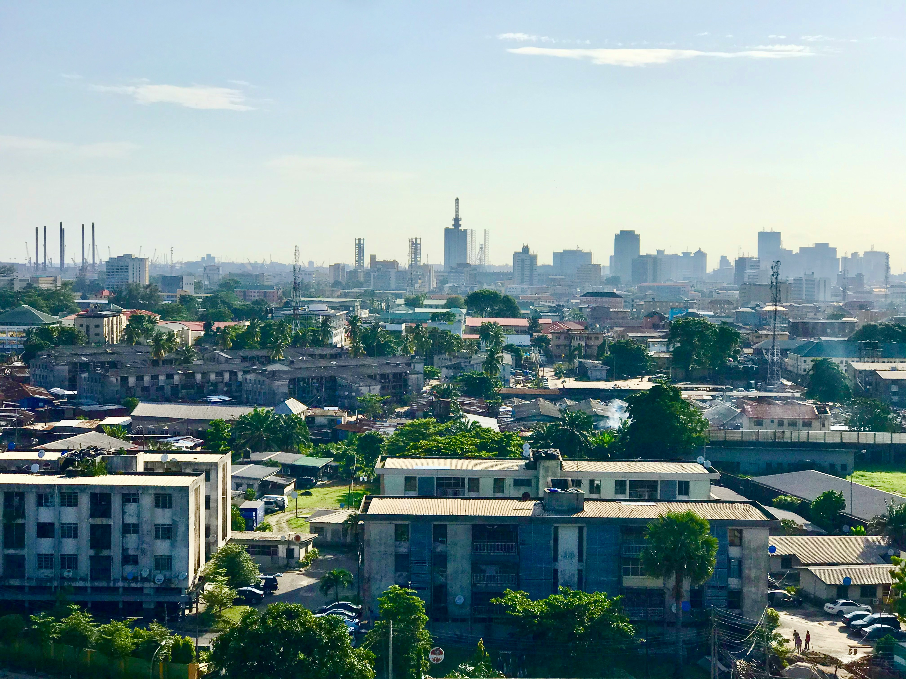

Anxiety Grows as Families Await News on 46 Kidnapped Victims in Oyo State
Residents of communities in Oriire Local Government Area of Oyo State remain deeply concerned following the abduction of 46 people, including schoolchildren and teachers.
According to reports, armed men stormed schools within the affected communities and forced pupils and staff into nearby forest areas. The incident has sparked fear among parents, community leaders, and education stakeholders.
Witnesses described scenes of panic as students and teachers attempted to flee. Local residents have called on security agencies to intensify rescue efforts and ensure the safe return of all victims.
Security personnel have reportedly launched search operations while authorities continue investigations into the attack. Community leaders have urged residents to remain calm and cooperate with security agencies.
The incident has reignited concerns about school security and the safety of students in rural communities across the country. Education advocates have called for stronger protection measures around schools.
Families of the victims continue to wait anxiously for positive developments while government officials assure the public that efforts are ongoing to secure their release.
More Local News

Lagos State Expands Public Transportation Network
State authorities have announced plans to improve mobility through new bus terminals and road upgrades.
Read More
FCT Launches New Urban Development Initiative
Officials say the project will improve infrastructure and housing across key districts.
Read MoreUniversities Adopt New Digital Learning Tools
Institutions continue to integrate technology into teaching and learning environments.
Read MoreSmall Businesses Receive Support Through New Grants
Entrepreneurs across Nigeria are expected to benefit from newly announced funding programmes.
Read MorePrimary Healthcare Centres Receive Equipment Upgrade
Several healthcare facilities have been equipped with modern medical tools to improve patient care.
Read MoreNigerian Startups Continue to Attract Investors
The country's growing technology ecosystem remains a major attraction for local and foreign investors.
Read More